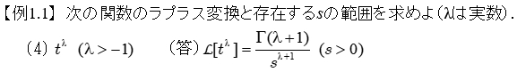

0.0.1 ［補足］「ラプラス変換が存在するsの範囲」も求める場合．

| (%i1) | assume(λ>−1); /*定数の仮定*/ |
| (%i2) | f(t):= t^λ; |
| (%i3) | assume(T>0); |
| (%i4) |
/*ラプラス変換の定義式における被積分関数*/ f_est: f(t)·%e^(−s·t); |
| --> |
/*s<0の場合，t→∞において，ラプラス変換の定義式における被積分関数が∞になるので， ラプラス変換の積分は収束しない．*/; |
| (%i5) |
/*s=0の場合のラプラス変換の定義式における被積分関数*/ f_est_s0: limit(f_est, s, 0); |
| (%i6) |
/*上式のtによる積分は，*/ integrate(f_est_s0, t); |
| --> |
/*条件λ>-1より，λ+1>0．すなわち，t→∞において，上式は無限になるので， s=0におけるラプラス変換は存在しない． したがって，ラプラス変換が存在するsの範囲は，s>0となる．【答え】*/; |
| (%i7) |
/*ラプラス変換の定義式．s>0，λは実数とする．*/ LT: integrate(f(t)·%e^(−s·t), t, 0, inf) ; /*「p」，「n」と答える．*/ |
| (%i8) |
/*ラプラス変換の定義式．s>0，λは整数とする．*/ LT2: integrate(f(t)·%e^(−s·t), t, 0, inf) ; /*「p」，「y」と答える．*/ |
| --> |
/*【コメント】λが実数，整数に関係なく，ラプラス変換の結果は，ガンマ関数で表される． Maximaでは，λが整数で0以上だとしても，Γ(λ+1)は，λ!には変換されない．*/; |
Created with wxMaxima.
The source of this Maxima session can be downloaded here.